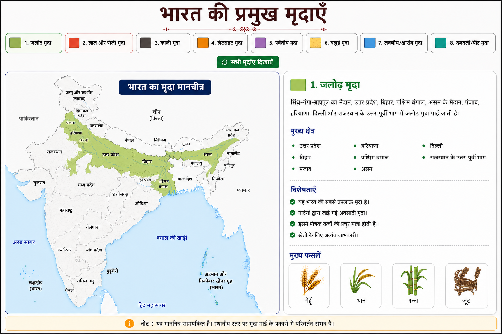

जलोढ़ मृदा
भारत की सबसे उपजाऊ मृदा। गंगा, ब्रह्मपुत्र तथा सिंधु नदी तंत्र द्वारा निर्मित।
प्रमुख क्षेत्र
- उत्तर प्रदेश
- बिहार
- पंजाब
- हरियाणा
- पश्चिम बंगाल
- असम
मुख्य फसलें
गेहूँ, धान, गन्ना, जूट

भारत की सबसे उपजाऊ मृदा। गंगा, ब्रह्मपुत्र तथा सिंधु नदी तंत्र द्वारा निर्मित।
गेहूँ, धान, गन्ना, जूट